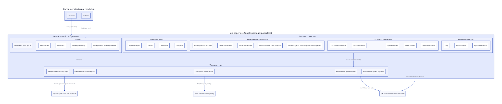
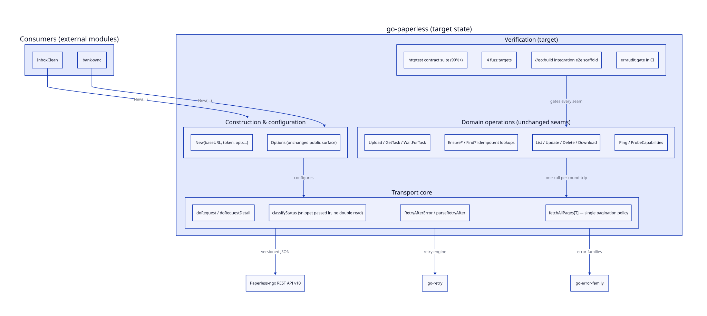

go-paperless Modularity & Coupling
Structural assessment of the Paperless-ngx client SDK: a deliberately single-package library, reviewed for coupling, cohesion, composability, and the seams that matter as it grows.
00Summary
go-paperless is a leaf library: it imports the standard library plus two
self-owned, zero-dependency modules (go-error-family, go-retry) and is
imported by exactly two consumers (InboxClean, bank-sync). The go-modularize
"when NOT to modularize" scoring gives two High signals (single package, single
domain; everything changes together), so the single go.mod is the
correct boundary — splitting it would create version-management friction
with zero composability payoff for consumers who always need the whole client.
01Dimension Scores (1–5)
| Dimension | Score | Evidence |
|---|---|---|
| Coupling | 5/5 | Leaf module; no internal cross-package edges exist; external deps are pinned, self-owned, dependency-free. |
| Cohesion | 5/5 | Every function serves the one purpose: talk to the Paperless-ngx v10 API. No stray utilities. |
| Modularity | 4/5 | Single module is right for the scale; internal file layout (one 1.9k-line file) is the only soft spot. |
| Composability | 4/5 | Functional options, observer hooks, value-snapshot types, and the generic fetchAllPages[T] compose cleanly. |
| Scalability | 4/5 | Client is immutable after construction and safe for concurrent use (race-tested); transport tuned for per-host reuse. |
| Service orientation | n/a | Client-only scope per AGENTS.md — pipeline logic intentionally lives in consumers. |
| Dependency direction | 5/5 | Wire payloads are unexported; public types never leak transport internals. |
02Structure & Diagrams
Current state (rendered from 2026-09-13_18-05-sdk-architecture.d2):

Target state (…-improved.d2): same public seams, plus the integration-test scaffold, the erraudit CI gate, and the single pagination policy — all landing 2026-09-13:

03Hotspots
Single-file accumulation (client.go ≈ 1.9k lines)
Construction, transport, tasks, named objects, documents, and probes share one file.
Cohesion is high, but discoverability degrades as APIs are added. Not a defect today —
a threshold decision: split into client.go / transport.go / tasks.go / named.go /
documents.go when the file crosses ~3k lines or the next resource family lands.
Pagination now has exactly one home
The three list endpoints previously carried three copies of the page loop. They now
share the generic fetchAllPages[T] — page size, the 100-page cap, and the
short-page stop condition can only drift in one place.
04Action Roadmap
P2 · Integration-test scaffold (//go:build integration)
The suite is httptest-only; a real upload → poll → reconcile pass against a live server is the missing structural confidence. Tracked in TODO_LIST.
P2 · erraudit gate in CI
Error-modernization regression guard; the codebase is currently at zero findings, pin it before the first drift.
P3 · File split at the next resource family
Keep the package; split the file along the four operation groups the diagrams already name.
P3 · ADR 0001 — API-version policy beyond v10
Probe-vs-negotiate-vs-break decision record; ProbeCapabilities/negotiatedAPIVersion already provide the runtime evidence.